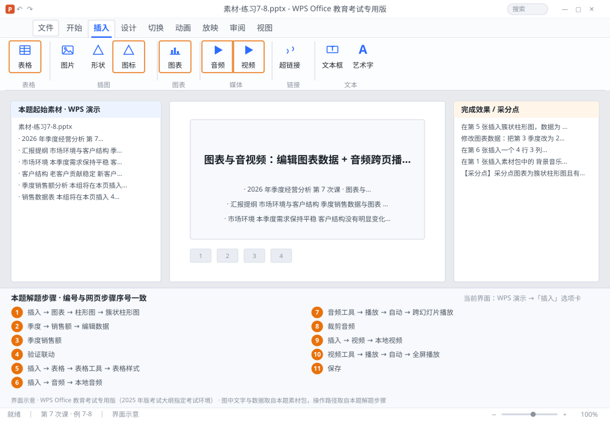

完成比对文档 · 例 7-8
图表与音视频：编辑图表数据 + 音频跨页播放 + 视频全屏 ｜ 第 7 次课 / WPS 演示 ｜ 网页：实操-演示1.html ｜ 考试环境：WPS Office 教育考试专用版（2025 年版考试大纲指定考试环境）
用途 本页按修订后的题目要求与解题步骤生成，是交卷自查的结果基准：
逐项列出每一步应出现的可复核结果，配合模拟操作截图与解题结果文件使用。
它不是素材包的一部分，不会预置答案动作；起始素材仍从本题素材包下载。
一、本题起始素材包
目录：练习素材/练习7-8-图表与音视频/ ｜
下载包：练习素材/下载/练习7-8-图表与音视频.zip
素材-练习7-8.pptx背景音乐.wav教学视频.mp4素材说明.txt
二、题目要求
- 在第 5 张插入簇状柱形图，数据为 4 个季度销售额（120/150/180/210），图表标题「季度销售额」。
- 修改图表数据：把第 3 季度改为 200，确认柱子高度随之变化。
- 在第 6 张插入一个 4 行 3 列表格，套用一种表格样式，首行为标题行。
- 在第 1 张插入素材包中的 背景音乐.wav，设置：自动开始、跨幻灯片播放、淡出 2 秒、循环播放。
- 在第 7 张插入素材包中的 教学视频.mp4，设置：自动播放、全屏播放、播完返回开头。
- 保存为 学号-姓名-练习7-8.pptx。
三、解题步骤（编号与下方核对表、截图编号一致）
- 插图表。选中第 5 张 →「插入」→「图表」→「柱形图」→「簇状柱形图」→ 确定。
- 编辑数据。弹出数据表 → 把「季度」与「销售额」填入 → 关闭数据表。后续要改：右键图表 →「编辑数据」→ 改数字 → 关闭。
- 改标题。点图表标题 → 输入「季度销售额」。
- 验证联动。把第 3 季度改成 200 → 柱子自动变矮，说明图表与数据表是联动的。
- 插表格。选中第 6 张 →「插入」→「表格」→ 拖出 4 行 3 列 → 输入内容 →「表格工具」→「表格样式」选一种 → 勾选「标题行」。
- 插音频。选中第 1 张 →「插入」→「音频」→「本地音频」→ 选 背景音乐.wav → 出现喇叭图标。
- 设音频播放。选中喇叭 →「音频工具」→「播放」选项卡：开始选「自动」→ 勾选「跨幻灯片播放」→ 勾选「循环播放，直到停止」→ 在「淡化持续时间」里把「淡出」设为 2 秒。
- 裁剪音频（可选）。同选项卡 →「裁剪音频」→ 拖动绿色/红色标记设定起止 → 确定。
- 插视频。选中第 7 张 →「插入」→「视频」→「本地视频」→ 选 教学视频.mp4。
- 设视频播放。选中视频 →「视频工具」→「播放」：开始「自动」→ 勾选「全屏播放」→ 勾选「播完返回开头」。
- 保存。Ctrl+S。
四、完成效果 / 采分点
采分点图表为簇状柱形图且有 4 个季度数据 · 图表标题正确 · 修改数据后图表联动 · 表格为 4 行 3 列且首行为标题行 · 音频自动开始 + 跨幻灯片播放 + 淡出 2 秒 + 循环 · 视频自动播放 + 全屏 + 播完返回开头
五、逐项完成核对表
| 步骤 | 关键操作路径 | 应出现的结果（可复核） |
|---|
| 1 | 插图表 | 5 张、「插入」、「图表」、「柱形图」、「簇状柱形图」 |
| 2 | 编辑数据 | 「季度」、「销售额」、「编辑数据」 |
| 3 | 改标题 | 「季度销售额」 |
| 4 | 验证联动 | 验证联动 |
| 5 | 插表格 | 6 张、「插入」、「表格」、4 行、「表格工具」 |
| 6 | 插音频 | 1 张、「插入」、「音频」、「本地音频」 |
| 7 | 设音频播放 | 「音频工具」、「播放」、「自动」、「跨幻灯片播放」、「循环播放，直到停止」 |
| 8 | 裁剪音频（可选） | 「裁剪音频」 |
| 9 | 插视频 | 7 张、「插入」、「视频」、「本地视频」 |
| 10 | 设视频播放 | 「视频工具」、「播放」、「自动」、「全屏播放」、「播完返回开头」 |
| 11 | 保存 | 保存 |
六、模拟操作截图

界面示意 · WPS Office 教育考试专用版 · 橙色编号与本题解题步骤序号一致；
图中文字与数据取自本题素材包，功能入口取自本题解题步骤。
核对方法：按网页解题步骤完成并另存自己的成稿后，逐行比对本表第 3 列的
参数、公式、区域、文件名与对象数量；再对照网页「完成效果 / 采分点」检查版式是否一致。